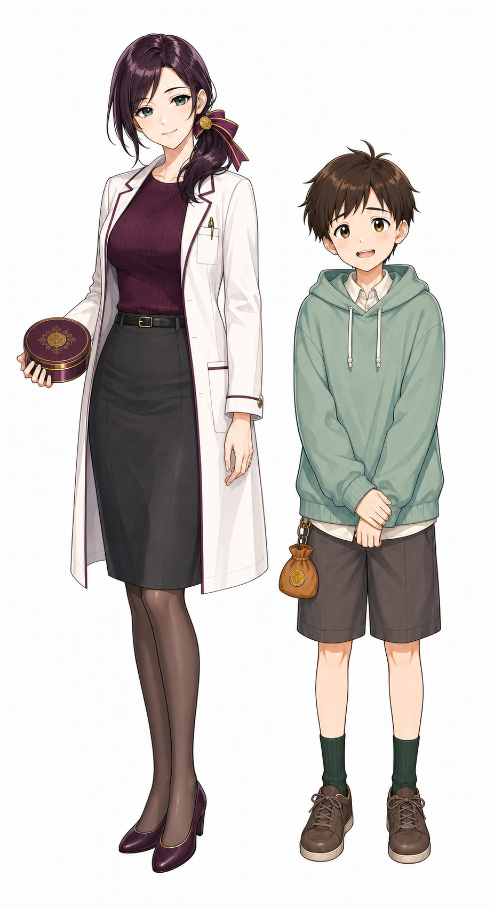
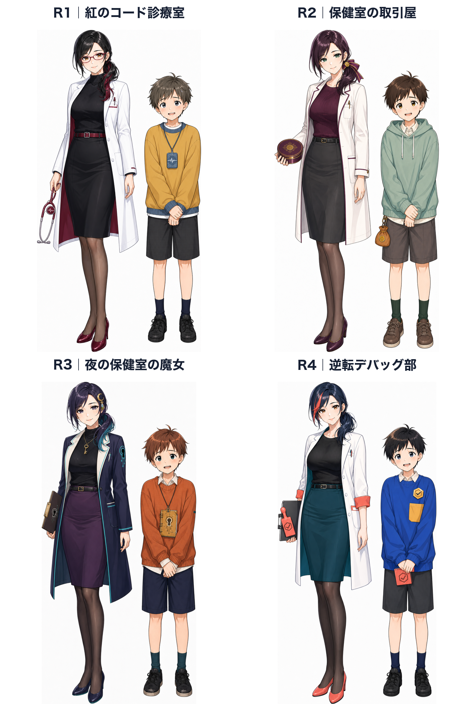
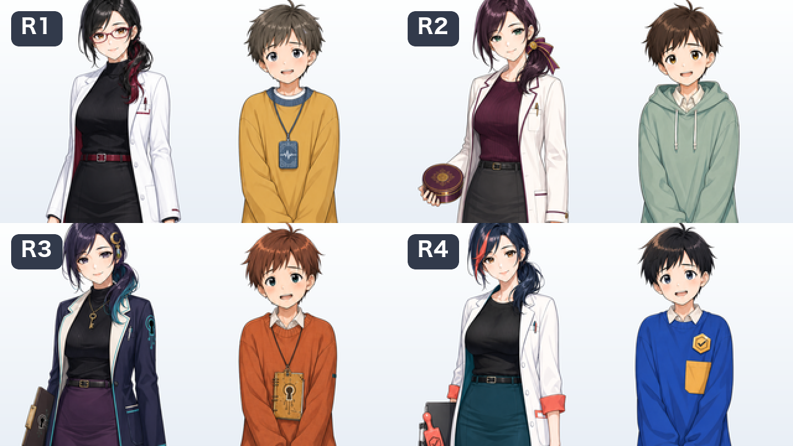

論点ごとの分析
1. 強いキャラは、形より先に「一文の矛盾」を持つ
Riotの制作解説は、人物の態度・性格・固有特徴をラフ段階から意識し、写実性よりも人物を一目で理解できる面白い形を優先している。[1] [2]
したがって、先生を単に巨乳にするのでは弱い。「完璧に見えるのに、人に頼む時は取引へ置き換えがちな保健医」と定義し、体型、白衣、トークン、台詞を同じ方向へ寄せる。少年は「押しに弱いのに、初心者判定だけは曲げない助手」とする。
2. 成功例から移せるのは、体型ではなく“重ね方”
参照例 公式設定で強い要素 今回へ移すもの 移さないもの
宝鐘マリン 海賊志望、宝とお金、姉風、小悪魔的なからかいが一つの人格に重なる。公式は2024年に「YouTube登録者数日本一のVTuber」と紹介した。[3] [4] 成熟した外見、条件交渉、悪戯っぽい余裕を同じテーマへ束ねる。 海賊衣装、露出、未成年相手への性的な台詞。 癒月ちょこ 魔界学校の保健医で、生徒に人気だが机は菓子袋で散らかる。職業と小さな欠点が同居する。[5] 保健医の一秒理解と、「整って見えるが私生活は少し雑」という親しみ。 学校設定を恋愛の根拠にすること。 白銀ノエル おっとりした外見と、筋力で解決する物騒な女騎士という反差がある。[6] 豊満な体型に、別の強い職業記号と意外な行動癖を重ねる。 騎士・筋肉の表層的な模倣。 葛葉 吸血鬼の整った見た目に、我が儘、子供っぽさ、金への弱さを重ねる。2025年に登録者200万人を超えた。[7] [8] 少年側に格好悪い欲と、毎回出せる悪癖を与える。 吸血鬼やニートの表層的な模倣。 叶 学生風の癒し系男子、柔らかい話し方、両手で抱える猫クッションが短いプロフィール内で結びつく。[9] 少年の柔らかさを、手元の大きな持ち物と所作で補強する。 謎めいた万能感。今回の少年は少し不器用な方が二人組で生きる。
反例 : 大きな胸や派手な色だけでも一枚絵は目立つ。しかし、複数話で記憶されるには、公式プロフィールのように職業、欲、欠点、口癖が一文で結びついている方が脚本へ展開しやすい。これは視覚比較からの推論であり、体型の効果を否定するものではない。
3. R2の顔を残し、輪郭と小道具を一段やり過ぎる

基準案。顔、低いサイドポニー、プラムとミント、丸いトークンは保全する。変更対象は先生の輪郭、白衣、リボン、少年の役割記号。
先生｜仮名: 紫ノ宮 澪
成人30歳 保健医 取引屋
顔と髪 : R2の優しい切れ長の目と低いサイドポニーを維持。髪は根元から毛先まで深いプラム一色。インナーカラー、前髪だけの別色、グラデーションは使わない。体型 : 成人女性として明確に豊満。胸、くびれ、腰の曲線を現行より強めるが、露出ではなく高い襟のリブニットと曲線的な仕立てで見せる。一秒記号 : 後頭部のプラム×金のリボンを約1.5倍。白衣は肩から腰へ絞り、裾を軽く広げて砂時計型を作る。手には顔ほどの丸いトークン缶。欠点 : 親切を無償で示すのが照れくさく、「代価」を口実にしがち。机は菓子とケーブルで少し散らかっている。口癖 : 「では、代価はひとつだけ」「私、ただでは甘やかさないの」
少年／青年｜仮名: 麦野 透
11歳版または19歳版 初心者判定役 褒められ弱い
顔と髪 : 丸顔、少し上目遣い、垂れ気味の眉。栗色の髪は単色で、前髪は少し不揃い。美形に整えすぎない。一秒記号 : くすみミントの大きな袖、胸元の少し曲がった金色の助手章、腰のトークン袋。手を袖へ半分隠す。格好悪い欲 : 先生に褒められたい。頼られると必要以上に頑張り、後から「また乗せられた」と気づく。固有権限 : 説明が難しければ初心者向け認定を押さない。ここだけは先生の笑顔にも譲らない。口癖 : 「その『ひとつ』、前も三つに増えましたよね」「分からないものは、分からないです」
生成する三段階
案 先生の変更 少年の変更 狙い
A 曲線強化 胸・くびれ・腰を現行より一段強める。リボンは少し拡大。 助手章だけ大型化。 R2に最も近い安全な改良。 B 記号強化・推奨 豊満な輪郭、絞った白衣、大リボン、大トークン缶を同時に強める。 大きな袖、曲がった助手章、袋を強める。 見た目と設定の一致を優先。 C サムネイル強化 顔周辺のリボンと上半身の曲線をさらに誇張し、白衣の縁取りを太くする。 眉と上目遣い、袖の大きさを一段誇張。 小表示での限界を探る比較用。
4. 関係は年齢で二本に分ける
11歳版｜憧れを見透かす先生
少年の気持ち : 先生を特別に感じ、良く見られたい。本人は初恋か尊敬か分からないが、物語は承認への憧れとして扱う。
先生の理解 : 背伸びしていることには気づくが、性的な意味づけはしない。褒め方と課題の出し方で成長を促す。
からかい : 「褒めると、少しだけ背筋が伸びるのね」「今日は助手章が曲がっていないのね、えらいわ」
境界 : 身体への視線、性的な含み、密室や夜を恋愛演出に使わない。YouTubeは18歳未満を未成年として扱う。[11]
19歳版｜恋と欲を区別できない助手
青年の気持ち : 専門学校一年・19歳。尊敬、恋、身体的な惹かれを本人がまだ区別できず、先生の近くでは判断が鈍る。
先生の理解 : 気持ちを見抜いている。仕事の評価を人質にせず、言葉と距離感で軽く揺さぶる。
からかい : 「そんなに見つめたら、診断を間違えるわよ」「代価は、今度コーヒーに付き合うこと」
境界 : 彼女は成績を付ける教員ではなく、学内医務室の職員兼動画制作の外部顧問。成人同士でも、サムネイルで胸だけを強調しない。[13]
推奨判断: ユーザーが希望する「恋なのか性欲なのか本人も分からない」「先生が見透かしてドキッとさせる」を残すなら、19歳版が設計上の本命になる。11歳版では、その要素を「尊敬か初恋か分からない」「褒め方を見透かされる」へ置き換える。
5. 二人を毎話動かす設定
舞台 保健室の奥にある小さな「トラブル診療台」。パソコン、スマートフォン、学習用サービスの困りごとを、症状として切り分ける。
表向きの契約 ヒント一つにつき、少年は検証を一つ手伝う。完了すると先生が丸いトークンを渡す。
先生の本音 人に頼るのが少し苦手。取引を口実にしないと、少年と一緒に何かをする理由を作れない。
少年の本音 必要とされることに弱い。自信はないが、「自分が分からないなら他の初心者も困る」と考える時だけ強くなる。
逆転点 先生は専門知識では勝つが、初心者のつまずきを予測できない。少年が認定を拒むと、説明をやり直すしかない。
長期の変化 少年は頼まれたから動く状態から、自分で問題を持ち込む状態へ進む。先生は取引を口実にせず「手伝って」と言えるようになる。
先生「では、代価はひとつだけ」
以前の4候補と縮小テストを開く

以前の4候補。今回の調査では、ユーザーが選んだ「保健室の取引屋」を基準案として採用した。 
以前の縮小テスト。細い装飾より、顔周辺の大きな形と服の広い色面が残った。